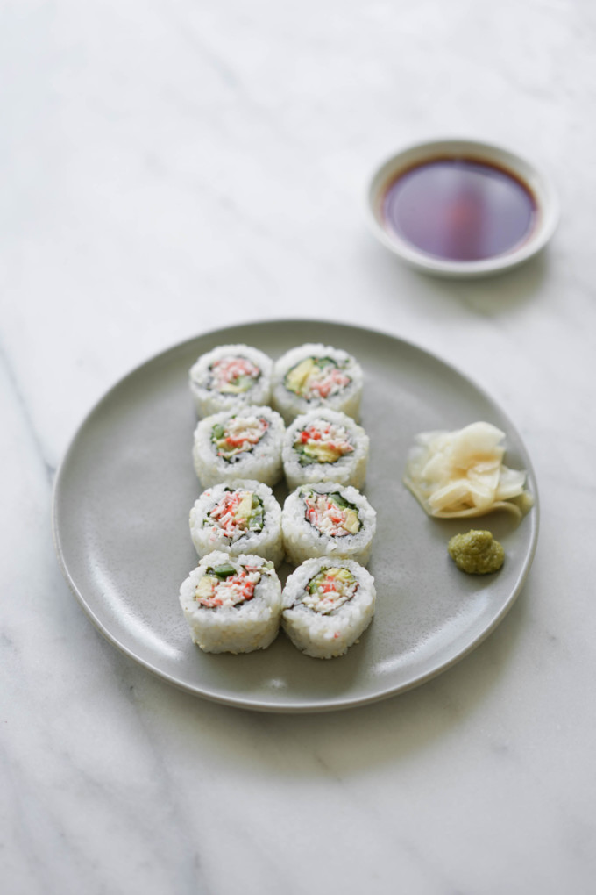

California Roll

California rolls are the Americanized version of a popular crab-sushi, using avocado, cucumber, and cooked crab-meat to be more palatable for Americans.
Ingredients
- Cooked, Shredded Crab-meat
- Nori Sheets (Seaweed)
- Soy Sauce (Tamari)
- White Sesame Seeds
- Kewpie Japanese Mayo
- Medium Avocado
- Persian Cucumbers
- Sushi Rice
- Vegetable of choice
Equipment
Directions
- Cook and prepare the rice and crab-meat
- Cut the Avocado and remove the pit
- Cut the Nori Sheet in half, height-wise
- Spread the rice on the Nori
- Sprinkle Sesame Seeds onto the rice
- Spread the Kewpie, Crab-Meat, and Cucumbers on the rice
- Using the bamboo sheet, roll the sushi and cut to your desired size.
- Enjoy!